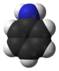

aniline

Definition: Aniline (from Portuguese anil 'indigo shrub', and -ine indicating a derived substance) is an organic compound with the formula C6H5NH2. Consisting of a phenyl group (−C6H5) attached to an amino group (−NH2), aniline is the simplest aromatic amine. It is an industrially significant commodity chemical, as well as a versatile starting material for fine chemical synthesis. Its main use is in the manufacture of precursors to polyurethane, dyes, and other industrial chemicals. Like most volatile amines, it has the odor of rotten fish. It ignites readily, burning with a smoky flame characteristic of aromatic compounds. It is toxic to humans.
Source: Wikipedia
Wikipedia Page
Wikidata Page